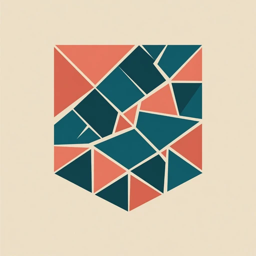

Release notes, testing milestones and visual progress from a one-person independent studio. No filler schedule — only updates when something meaningful changes.

Broken Man Studios opens its Facebook Page
The studio now has a Facebook home for concise project notes, release updates and work-in-progress images. QuiltMath remains the first released project, while the studio identity stays open to different kinds of future work.
QuiltMath 1.3.3: icon, accessibility and Premium reliability
The 1.3.3 build corrects the launcher icon on devices that displayed it as a plain square. It also improves screen-reader support and makes Premium ownership available more reliably immediately after app start.
The Android release continues through Google Play testing before public availability.
Visual calculation guides are being explored
A first on-device prototype adds a measurement illustration to the Binding workflow. The current direction keeps dimension labels outside the quilt drawing, preventing overlaps while preserving the existing calculator layout.
The same approach may later expand to other calculators after device testing.
Earlier QuiltMath releases
1.3.2
More reliable Premium purchases Aug 13, 2026
Completed one-time purchases are confirmed immediately, while interrupted transactions can recover on app start or through Restore purchase.
1.3.1
Tablet optimization Aug 12, 2026
Layout and touch targets were tuned for larger Android screens.
1.3.0
Clearer calculation guidance Aug 12, 2026
Contextual guidance explains calculator assumptions. Sashing gained join-friendly and piece-aware planning, and Flying Geese now validates the required 2:1 ratio.